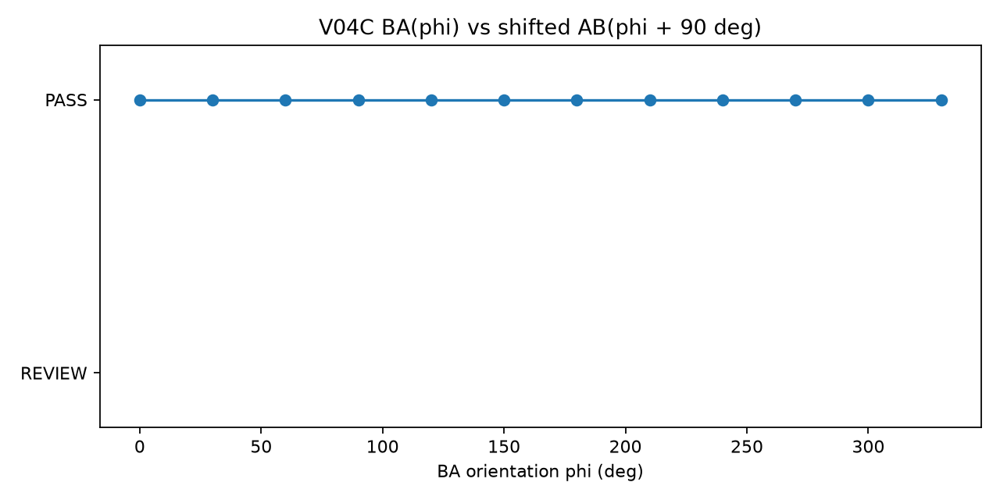
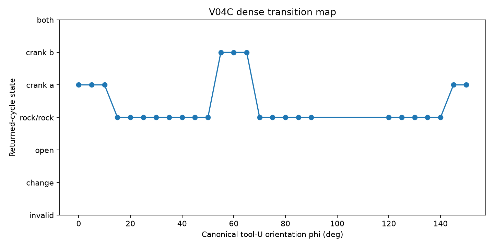
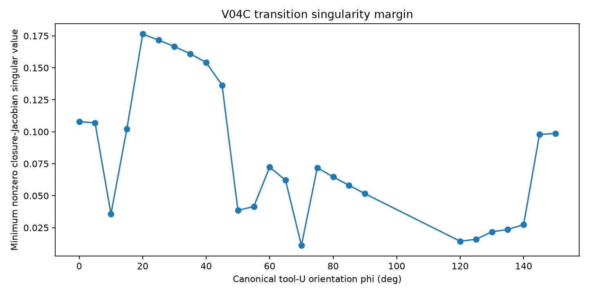

Purpose: decide which virtual-U parameters must survive into V05.
Tested hypothesis: BA(phi) ~ AB(phi + 90 deg), with beta winding sign reversal.

| BA phi | AB phi | status | classes | winding | coverage | result |
|---|---|---|---|---|---|---|
| 0.0 | 90.0 | True | True | True | True | PASS |
| 30.0 | 120.0 | True | True | True | True | PASS |
| 60.0 | 150.0 | True | True | True | True | PASS |
| 90.0 | 180.0 | True | True | True | True | PASS |
| 120.0 | 210.0 | True | True | True | True | PASS |
| 150.0 | 240.0 | True | True | True | True | PASS |
| 180.0 | 270.0 | True | True | True | True | PASS |
| 210.0 | 300.0 | True | True | True | True | PASS |
| 240.0 | 330.0 | True | True | True | True | PASS |
| 270.0 | 0.0 | True | True | True | True | PASS |
| 300.0 | 30.0 | True | True | True | True | PASS |
| 330.0 | 60.0 | True | True | True | True | PASS |
Tested hypothesis: AB(phi) ~ AB(phi + 180 deg) in status, classes,
winding magnitude, and coverage.
| phi | phi+180 | status | classes | |W| | coverage | result |
|---|---|---|---|---|---|---|
| 0.0 | 180.0 | True | True | True | True | PASS |
| 30.0 | 210.0 | True | True | True | True | PASS |
| 60.0 | 240.0 | True | True | True | True | PASS |
| 90.0 | 270.0 | True | True | True | True | PASS |
| 120.0 | 300.0 | True | True | True | True | PASS |
| 150.0 | 330.0 | True | True | True | True | PASS |
| max steps | status | returned | w alpha | w beta | class alpha | class beta | points |
|---|---|---|---|---|---|---|---|
| 1600 | open_branch | False | — | — | open_branch | open_branch | 1601 |
| 3200 | returned | True | 0 | 0 | rocker | rocker | 1685 |
| max steps | status | returned | w alpha | w beta | class alpha | class beta | points |
|---|---|---|---|---|---|---|---|
| 1600 | open_branch | False | — | — | open_branch | open_branch | 1601 |
| 3200 | returned | True | 0 | 0 | rocker | rocker | 1685 |
Coarse state changes triggered dense probing in: [0.0, 30.0], [30.0, 60.0], [60.0, 90.0], [120.0, 150.0].


| phi | status | w alpha | w beta | class alpha | class beta | coverage alpha | coverage beta | min sigma | points |
|---|---|---|---|---|---|---|---|---|---|
| 0.0 | returned | -1 | 0 | crank | rocker | 0.994 | 0.30365 | 0.10794 | 466 |
| 5.0 | returned | -1 | 0 | crank | rocker | 0.99128 | 0.30478 | 0.10697 | 458 |
| 10.0 | returned | -1 | 0 | crank | rocker | 0.99303 | 0.31428 | 0.035757 | 467 |
| 15.0 | returned | 0 | 0 | rocker | rocker | 0.56307 | 0.26268 | 0.10204 | 306 |
| 20.0 | returned | 0 | 0 | rocker | rocker | 0.46387 | 0.28152 | 0.17638 | 284 |
| 25.0 | returned | 0 | 0 | rocker | rocker | 0.41246 | 0.30526 | 0.17168 | 277 |
| 30.0 | returned | 0 | 0 | rocker | rocker | 0.37879 | 0.33461 | 0.16667 | 276 |
| 35.0 | returned | 0 | 0 | rocker | rocker | 0.35437 | 0.3715 | 0.16096 | 278 |
| 40.0 | returned | 0 | 0 | rocker | rocker | 0.33558 | 0.4202 | 0.15412 | 284 |
| 45.0 | returned | 0 | 0 | rocker | rocker | 0.3207 | 0.49345 | 0.13643 | 297 |
| 50.0 | returned | 0 | 0 | rocker | rocker | 0.30884 | 0.85587 | 0.038559 | 404 |
| 55.0 | returned | 0 | -1 | rocker | crank | 0.3513 | 1 | 0.041506 | 734 |
| 60.0 | returned | 0 | -1 | rocker | crank | 0.3376 | 1 | 0.072398 | 732 |
| 65.0 | returned | 0 | -1 | rocker | crank | 0.3265 | 1 | 0.062104 | 739 |
| 70.0 | returned | 0 | 0 | rocker | rocker | 0.22427 | 0.87213 | 0.011073 | 533 |
| 75.0 | returned | 0 | 0 | rocker | rocker | 0.19992 | 0.79073 | 0.071873 | 476 |
| 80.0 | returned | 0 | 0 | rocker | rocker | 0.18808 | 0.76597 | 0.064708 | 464 |
| 85.0 | returned | 0 | 0 | rocker | rocker | 0.18489 | 0.74403 | 0.058125 | 459 |
| 90.0 | returned | 0 | 0 | rocker | rocker | 0.19655 | 0.72618 | 0.051568 | 460 |
| 120.0 | returned | 0 | 0 | rocker | rocker | 0.79894 | 0.90728 | 0.014422 | 1685 |
| 125.0 | returned | 0 | 0 | rocker | rocker | 0.86969 | 0.62891 | 0.015934 | 1200 |
| 130.0 | returned | 0 | 0 | rocker | rocker | 0.96836 | 0.59608 | 0.021786 | 1226 |
| 135.0 | returned | 0 | 0 | rocker | rocker | 1 | 0.56928 | 0.02356 | 1273 |
| 140.0 | returned | 0 | 0 | rocker | rocker | 1 | 0.54655 | 0.027478 | 1346 |
| 145.0 | returned | -1 | 0 | crank | rocker | 0.9939 | 0.35739 | 0.097893 | 561 |
| 150.0 | returned | -1 | 0 | crank | rocker | 0.99347 | 0.34642 | 0.098677 | 544 |
Do not fit Grashof-like descriptor rules until the retained virtual-U parameters from this readout are included in the atlas key. Any canonicalization here remains provisional until repeated across multiple physical geometries.